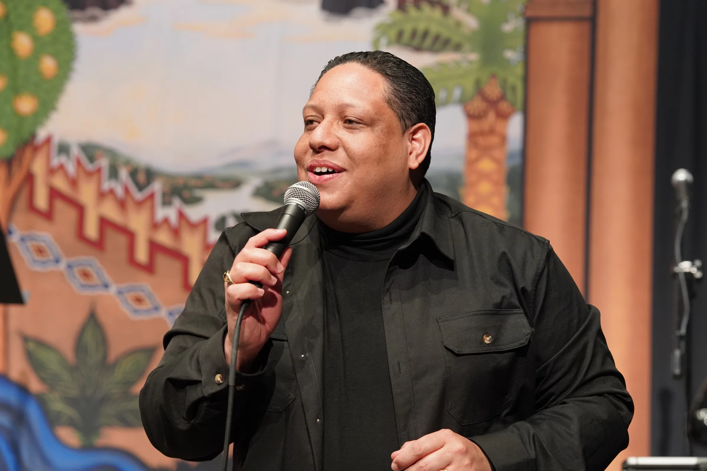

{kind=link}
{kind=link}
{kind=link}
{kind=link}
Logotipos
Versión en blanco (para fondos oscuros) y en negro (para fondos claros). PNG con transparencia.

Electronic Press Kit
Todo lo que necesitas para promover el evento: biografía, fotografías oficiales, logotipos y requerimientos técnicos.
Biografía corta
Marvin Núñez es un cantautor católico dominicano nacido en Santiago de los Caballeros. Descubrió su vocación musical en la Parroquia Cristo Rey del Universo y ha dedicado más de dos décadas a la evangelización a través de la música. Autor de los álbumes «Toca al Señor» (2006) y «Jesús: The Album» (2015), fundador del ministerio Cristo 911 y reconocido como Artista Regional en los Premios Custodia 2019. Ha ministrado en la Jornada Mundial de la Juventud en Panamá, en FEMÚSICA (Cartagena, Colombia) y en la Vigilia de Pentecostés de la Catedral de San Patricio en Nueva York. Actualmente forma parte de los Ministerios de Música de la Arquidiócesis de Nueva York y la Diócesis de Paterson, New Jersey.
Biografía extensa
Nacido en Santiago de los Caballeros, República Dominicana, Marvin Núñez descubrió su vocación musical en la Parroquia Cristo Rey del Universo, donde inició en la Pastoral Juvenil y formó parte de los coros «Nacidos de Nuevo» y «Cantores del Rey». Allí aprendió a tocar la guitarra de la mano de Betty Fernández y Nelson Chevalier.
Su camino continuó en la Renovación Carismática Católica, primero como guitarrista del artista católico Junior Arias y luego como bajista, acompañando a Ambiorix Padilla, Jorge Morel, Arcadio Valdez, Freddy Espinal y Camilo Fernández.
En 2006 lanzó su primer álbum, «Toca al Señor», con temas como «Si me quieres tentar» y «La Sangre de Cristo», reconocidos en emisoras católicas. En 2013 fundó Cristo 911, su comunidad y ministerio musical, y en 2015 presentó «Jesús: The Album», destacando con «Un Selfie con Jesús», lo que lo llevó a ser elegido Ministerio Musical Oficial de la Pastoral Juvenil de Santiago, R.D.
Desde 2017 ha llevado su música y mensaje a los Estados Unidos. En 2019 fue reconocido como «Artista Regional» en los Premios Custodia, participó en la Jornada Mundial de la Juventud en Panamá y fue invitado a FEMÚSICA en Cartagena, Colombia. Actualmente forma parte de los Ministerios de Música de la Arquidiócesis de Nueva York y la Diócesis de Paterson, New Jersey.
Junto a su esposa Iglory y sus hijos Matthew, Ethan y Evan, vive su fe en familia, convencido de que la misión comienza en casa y se extiende hasta donde Dios lo envíe.
Fotografías oficiales
Clic derecho sobre la imagen para guardar.
Versión en blanco (para fondos oscuros) y en negro (para fondos claros). PNG con transparencia.
Requerimientos de sonido y escenario según el formato: solista, tropical, tropical con batería o banda completa.
Nombre artístico: Marvin Núñez
Origen: Santiago de los Caballeros, R.D.
Género: Música católica / alabanza
Idioma: Español
Web: marvinnunezrd.com
Para entrevistas, material adicional o coordinación de cobertura.
Uso permitido para promoción de eventos y notas de prensa. Por favor no modifiques los logotipos ni recortes las fotografías oficiales.
{kind=link}
{kind=link}